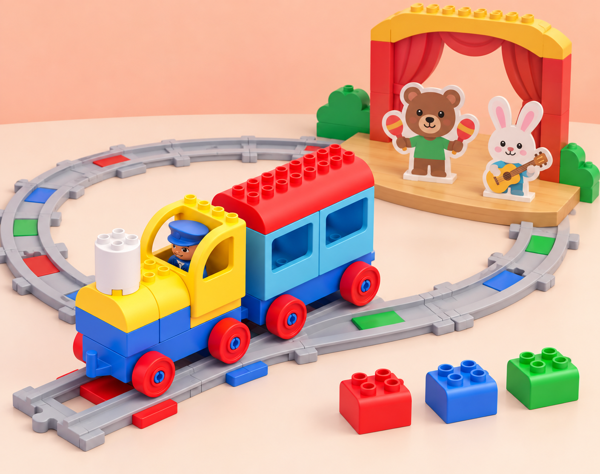
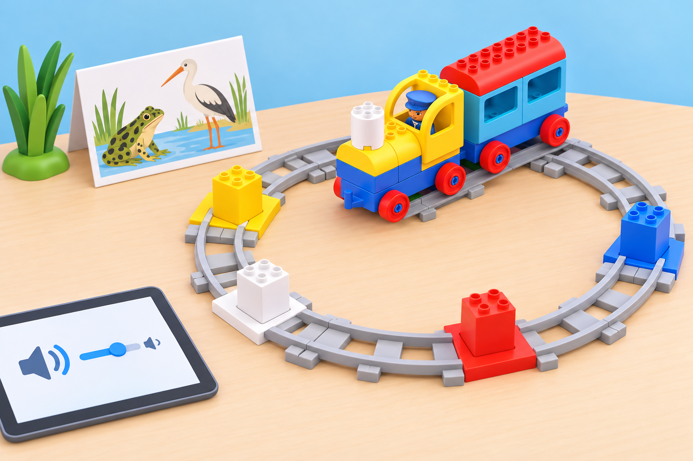

Un concert de sons del pati
🏷️ Art, música i expressió
🌱 Situació, repte i intenció
🎯 Aprenentatges i vocabulari
- Escoltar i comparar sons sense atribuir-los una identificació científica que no s’ha comprovat.
- Ordenar esdeveniments sonors i anticipar què passarà quan canvie la seqüència.
- Crear i revisar un patró musical propi amb els maons i les funcions disponibles.
- Comunicar una intenció artística i respectar els torns durant la composició col·lectiva.
🧰 Materials i preparació
La proposta adapta una lliçó prevista per a fins a quatre participants. Prepareu un tren/vagó Coding Express, les peces necessàries per a una via tancada, els maons d’acció de diversos colors, l’app oficial en un dispositiu compatible, figures o targetes d’animals i una superfície on es puga ordenar la composició. Comproveu abans de la sessió si l’app s’instal·la, si es connecta al tren i quines respostes sonores produeix cada maó; les funcions poden dependre de la versió i de la configuració.
No cal que cada maó tinga un animal assignat ni que els sons siguen gravacions reals. Registreu el comportament observat, sense prometre una correspondència fixa entre color i so. Prepareu una alternativa sense pantalla: targetes amb símbols, instruments suaus, veu, palmades o sons triats pel grup. Demaneu permís abans de reproduir sons intensos, manteniu el volum moderat i no enregistreu veus de l’alumnat.
Vocabulari útil: so, ritme, melodia, seqüència, repetir, maó d’acció, composició i concert. Introduïu les paraules amb gestos o pictogrames i deixeu que els xiquets expliquen les seues idees oralment, assenyalant o ordenant targetes.
📅 Seqüència didàctica
Escoltem i imaginem el concert (40 min)
Fase 1 · Activem i prediem
Obriu amb una conversa breu: quins sons escoltem al pati, al jardí o prop d’una séquia? Diferencieu el que s’ha sentit realment («he sentit un ocell») del que s’imagina («potser era una merla»).
Fase 2 · Explorem i construïm
Trieu tres animals coneguts de l’entorn de l’Albufera —per exemple, granota, ocell o insecte— i observeu-ne imatges. Useu un recurs sonor educatiu revisat pel docent o representeu les veus amb instruments suaus; expliqueu que la imitació no substitueix l’escolta de la fauna real.
Fase 3 · Expliquem i registrem
Escolteu o marqueu el ritme d’una cançó d’animals que el grup ja conega. Feu un mapa de tres entrades: animal, so real o inventat, i com el representarem. Deixeu la imitació vocal com una opció, no com una obligació.
Fase 4 · Apliquem i millorem
El docent proposa que un autobús imaginari visite un concert a la marjal; el grup decideix quins animals hi participaran i com pot mostrar-los sense capturar-los ni molestar-los. Reviseu el mapa perquè quede clar què és una observació i què és una representació inventada.
Fase 5 · Comprovem i reflexionem
Investiguem les respostes de la via (40 min)
Fase 1 · Activem i prediem
En equip de fins a quatre, construïu una via circular i situeu al voltant les figures o targetes. Col·loqueu un maó d’acció de cada color disponible, d’un en un, en punts fàcils de veure. Abans de conduir, cada participant tria com fer avançar el tren amb l’app i prediu què podria passar quan travesse un maó.
Fase 2 · Explorem i construïm
Feu una volta de prova. Si cal, afegiu un autobús de paper o una figura com a passatger: no cal construir un vehicle diferent del tren del kit. Torneu a passar quan una resposta no s’haja pogut escoltar bé.

Fase 3 · Expliquem i registrem
Registreu «maó provat / què hem sentit o observat / animal que ens recorda / ho hem comprovat?». Després, useu l’app per explorar o canviar el comportament dels maons i anoteu què canvia.
Fase 4 · Apliquem i millorem
Expliqueu que el color, per si sol, no identifica cap espècie, i que l’app pot produir sons representatius o musicals, no enregistraments de la fauna local. Si els sons no corresponen als animals esperats, convertiu-ho en una pregunta d’investigació, no en un error de l’alumnat.
Fase 5 · Comprovem i reflexionem
Composem, repetim i compartim (40 min)
Fase 1 · Activem i prediem
Cada equip tria una idea que vol comunicar: matí tranquil, pluja que arriba, festa de l’horta o passeig per la marjal. Abans d’iniciar el tren, dibuixa o dicta la seqüència i prediu què transmetrà.
Fase 2 · Explorem i construïm
Ordeneu els maons d’acció a la via i proveu la composició. Convideu el grup a identificar un fragment que es repetisca. Si la volta tancada repeteix tota la seqüència, distingiu-la del patró més curt que l’equip ha decidit compondre.
Fase 3 · Expliquem i registrem
Canvieu només l’ordre d’un maó i compareu les dues versions: quin so apareix abans?, què es repeteix?, quina transmet millor la idea? Recolliu una frase o marca visual sobre una decisió que l’equip ha canviat després d’escoltar el resultat.
Fase 4 · Apliquem i millorem
Presenteu la composició amb el tren, amb pictogrames o amb instruments de taula. Qui no vulga actuar pot ordenar la seqüència, donar l’entrada o mostrar el cartell.
Fase 5 · Comprovem i reflexionem
🧪 Evidències i avaluació
Observeu el procés i no la qualitat musical ni la capacitat d’imitar sons. Feu una anotació breu per equip o participant en aquests indicadors:
- Anticipa o descriu l’ordre de dos o més esdeveniments abans de provar-lo.
- Registra què ha passat distingint observació, predicció i interpretació.
- Canvia una variable cada vegada per comparar dues seqüències.
- Reconeix una repetició i pot assenyalar-la amb peces, gestos o pictogrames.
- Comunica una intenció i explica una decisió de composició amb el suport que necessite.
La carpeta d’evidències pot incloure el mapa sonor inicial, la taula d’exploració, les dues partitures visuals i una nota docent sobre la conversa final. Una resposta inesperada de l’app també és una evidència vàlida si l’equip la descriu i la comprova.
♿ Participació, accessibilitat i seguretat
Permeteu observar sense escoltar sons, useu volum baix i oferiu una representació visual equivalent. Per a alumnat amb sensibilitat auditiva, es pot desactivar l’àudio i treballar amb llums/maons com a marcadors, o fer servir auriculars només si són còmodes i acceptats. Per a alumnat amb dificultats motrius, un company pot conduir el tren seguint instruccions dictades, o es pot fer tota la seqüència amb targetes de taula.
Oferiu rols rotatius —ordenar, predir, conduir, registrar o presentar— i no exigiu cantar, ballar, parlar en públic ni compartir vivències personals.
🔗 Referents i adaptació
Adapta Music – Animal Concert: reconéixer sons d’animals, explorar amb l’app els controls i l’efecte de cada maó, relacionar els sons amb models d’animals, ordenar els maons per a compondre una melodia, identificar-hi un patró repetit i expressar què comunica la música. El concert de la marjal, els animals i les targetes són propis; la disponibilitat de l’app i dels sons es comprova al centre, amb una alternativa desconnectada prevista.